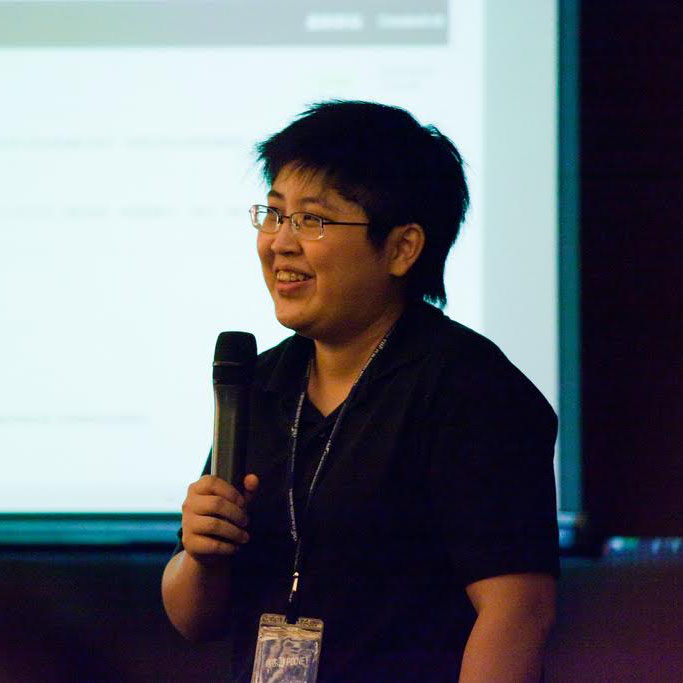
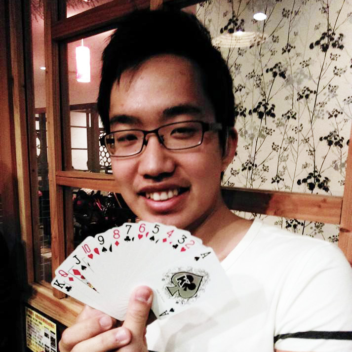
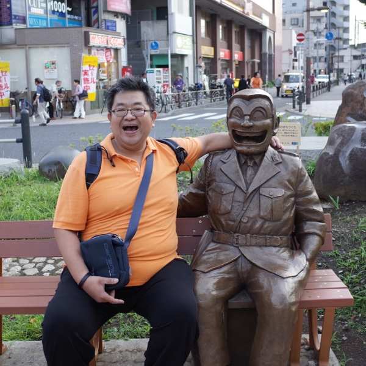

08:30 ～ 09:00

MOPCON
參加者報到
09:00 ～ 09:15
MOPCON
開幕式
09:15 ～ 10:00
10:00 ～ 10:15
Take a Break
上午中場休息時間

11:00 ～ 11:15
Take a Break
上午中場休息時間
11:15 ～ 12:00


12:00 ～ 13:00
Lunch time
午餐時間
13:00 ～ 13:45

13:45 ～ 14:00
Take a Break
下午中場休息時間
14:00 ～ 14:45

14:45 ～ 15:15
點心時間
休息、聊天、下午茶
15:15 ～ 16:00
16:00 ～ 16:15
Take a Break
下午中場休息時間
17:00 ～ 17:05
Take a Break
下午中場休息時間
17:50 ～ END
END
本日議程結束
18:00 ～
Devel Night
星光講師 x 開發者之夜